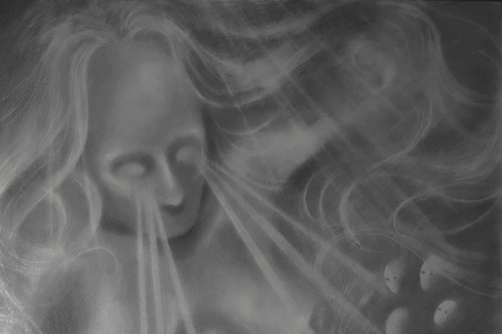

Currently
Liminalities
Solo show at Galerie Cetraro, Paris
05.10 - 16.11.2024
Dilithium, chapter 2 : doppelgängers
Group show at Exile gallery, Vienna
c. Jen Kratochvil
13.09 - 19.10.2024
Recently
Now you’re inside me Solo show at Galerie Cetraro, Paris
Projection & Talk w. Andrew Hodgson, Fondation d'entreprise Ricard, Paris
Fiskars Village Art & Design Biennale, Surprise Guest c. Sini Rinne-Kanto
Psychic Topographies
Group show at Profil Paris
c. Sini Rinne-Kanto and Andrew Hodgson